End-to-end walkthrough
22 steps from a locked legacy screen to an agent calling a typed function. Every screenshot below is of the real application or the real operator console; every terminal block is real captured output. Nothing here is a mockup.
A legacy back-office application with no API. Everything after this exists because the only way in is the screen a human operator uses.
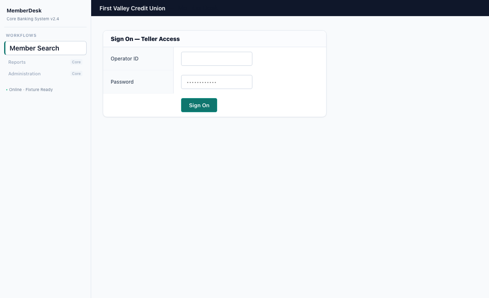
This is the starting condition the brief describes — an enterprise application an AI agent has to operate through its user interface, because there is no other way in.
The frameset matters more than it looks. Navigation lives in one frame and the working area in another, so a snapshot has to traverse into named frames to see anything at all, and the same accessible name commonly appears in both. Every target recorded later scopes itself to a frame for exactly this reason: resolving to the wrong one is a wrong click, not a failure.
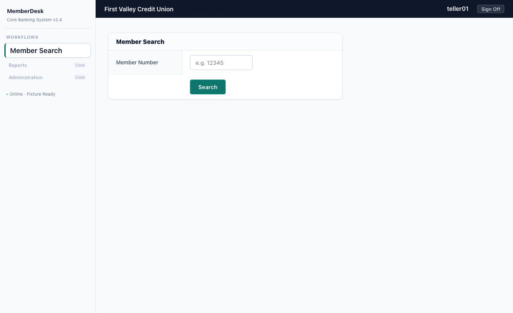
The label sits in a neighbouring cell, not attached to the input. That is how legacy screens are built, and it is why the resolver needs a rung that finds a control by the text identifying it rather than by anything on the control itself.
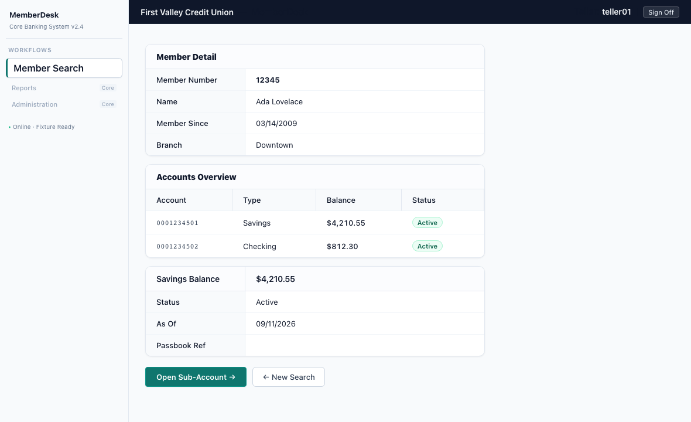
The duplication is the interesting part. A naive 'find the balance' rule has two candidates and no principled way to choose, which is precisely where a resolver that guesses eventually reads the wrong number.
The system refuses ambiguity rather than breaking the tie with a similarity score. A tunable threshold is a knob that eventually gets turned.
An LLM drives the live application until the goal is met. This is the only place a model is allowed in the loop, and it runs once.
$ make discover
GOAL_MET after 6 step(s)
evidence : evidence/discovery/disc-e0aa86b951
outputs : {
"savings_balance": "$4,210.55",
"account_status": "Active",
"as_of_date": "09/11/2026"
}
checkpoint hint: Member Detail page for member 12345 shows Savings Balance:
$4,210.55, Status: Active, As Of: 09/11/2026.
Discovery succeeded.
capability : evidence/capabilities/memberdesk.savings_balance@1.0.0.yaml
inputs : ['member_number']
outputs : ['savings_balance', 'account_status', 'as_of_date']This is the probabilistic half of the system and the only part that costs money or varies between runs. Everything after it is model-free by construction.
Each call records the gateway's own provider and request id, so the run can be reconciled against the gateway's logs rather than taken on trust. That matters for a claim like 'a real model did this': the evidence is issued by something other than the process making the claim.
CURRENT PAGE http://127.0.0.1:8811/ MemberDesk
[nav] link "Member Search" #nav:/table[7]/row[0]/cell[0]/link[0]
[content] heading "Member Search"
[content] cell "Member Number"
[content] textbox "Member Number" #content:/row[22]/cell[1]/textbox[0]
[content] button "Search" #content:/row[23]/cell[1]/button[0]Feeding a model raw HTML teaches it to reach for selectors, and a selector is a promise about markup that a tenant's restyle silently breaks. Giving it a semantic tree means the identity it picks is the identity that gets recorded.
The same abstraction is what makes the artifact portable to a surface where no CSS exists at all — a desktop accessibility tree has roles and names too.
The discovery run is compiled into a typed, versioned, content-addressed document. This is the deliverable everything else is built around.
steps:
- id: type_text_member_number
description: Enter member number 12345 to search for the member.
action:
type: type
target:
role: textbox # semantic identity
name: {value: Member Number, match: exact}
scope: {frame: content} # which frame, because names repeat
anchor: # the label cell beside it
relation: row_of
text: Member Number
hints: {css: 'input[name="memno"]'} # a cache, never an identity
fingerprint: ea2237aa18a5e0e3
recorded_strategy: semantic_exact # the drift baseline
value: {$input: member_number} # parameterised, not the literal 12345
risk: safeThe literal the model typed, 12345, has become {$input: member_number}. That is what makes the artifact a function rather than a recording.
recorded_strategy is the rung that worked at record time. Replay compares the rung it actually needed against this baseline, which is what turns 'the page changed' from an outage into a measurable drift score.
A stored hint is only used if the candidate it finds also satisfies the semantic assertion. That check is what stops an artifact from quietly becoming CSS-coupled.
entrypoint:
url_pattern: '{base_url}/'
content_hash: sha256:c6667196c835c261f...
provenance:
discovered_by:
run_id: disc-e0aa86b951
model: auto
transcript_ref: evidence/discovery/disc-e0aa86b951/trace.jsonlThe artifact is immutable and content-addressed: running a modified one while recording a version that no longer matches its content would make the audit trail a fiction, so the loader refuses a hash mismatch outright.
Provenance is a reference, not a copy. The transcript stays in the evidence directory; the artifact stays reviewable.
From here on there is no model in the decision loop — not as a fallback, not on failure.
SUCCESS - 3 output(s) in 473ms
outputs : {
"savings_balance": "$18,730.00",
"account_status": "Active",
"as_of_date": "09/11/2026"
}
evidence : evidence/replay/rep-0bf018922a
drift : 0.00 strategies: {'semantic_exact': 3, 'structural_anchor': 2}This is the whole thesis in one command: the expensive, uncertain step happened once, and what remains is a deterministic function with a typed signature.
Drift 0.00 means every control was found by the same rung that found it during discovery. A run that still succeeds but has to fall to a weaker rung reports that as drift, which is the early warning before anything breaks.
The brief names conflating a business outcome with a failure as the most common design mistake in this problem. The schema keeps them apart structurally.
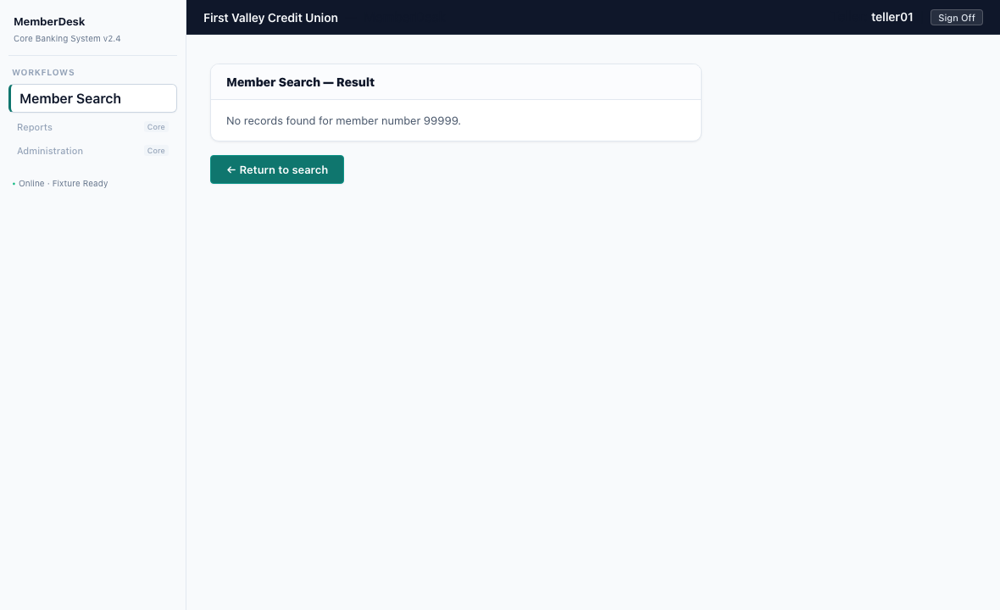
Nothing has gone wrong. The system was asked a question and the answer is negative.
BUSINESS OUTCOME - member_not_found
data : {"member_id": "99999"}
evidence : evidence/replay/rep-ac551c9724
drift : 0.00 strategies: {'semantic_exact': 2}Treating this as a failure turns a routine result into a 2am page, and trains everyone to ignore the alert that also fires for real defects.
ObservationClass (what we saw) and RunStatus (how the run ended) are separate type families precisely so this distinction cannot be collapsed by accident.
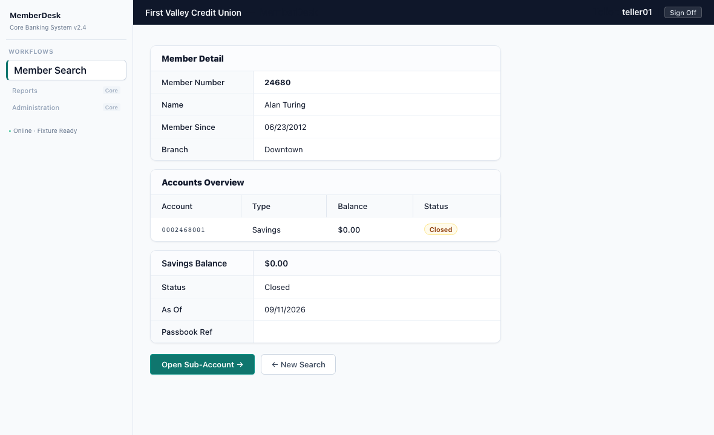
Worth showing because it is the case where a system pattern-matching on 'the balance looks empty' would invent a failure. The values are read off the record, so a legitimately empty account reports as one.
FAILED - input_validation_failed: input 'member_id' = 'not-a-member' does not match the declared pattern '^[0-9]{4,10}$'
evidence : evidence/replay/rep-316490b508
drift : 0.00 strategies: {}The typed signature is enforced at the boundary, not discovered halfway through a form. Nothing was clicked, so there is nothing to undo.
Recovery is declared in the artifact and bounded there. Unbounded recovery turns one transient 502 into a thousand retries against a struggling core banking system.
SUCCESS - 3 output(s) in 506ms
outputs : {
"savings_balance": "4210.55",
"account_status": "Active",
"as_of": "09/11/2026"
}
evidence : evidence/replay/rep-86c1a491ce
drift : 0.00 strategies: {'semantic_exact': 2, 'structural_anchor': 3}The rule is part of the artifact, reviewable before approval, and carries a mandatory max_attempts. The schema will not accept an unbounded one.
NEEDS HUMAN - recovery rule 'transient_load' did not clear the condition after 3 attempt(s)
evidence : evidence/replay/rep-02156bfa03
drift : 0.00 strategies: {}This is the difference between a bounded remedy and a retry loop. The run ends in a state a person can act on, with the reason recorded.
Unknown states stop the run. In banking, an unverified click is an incident.
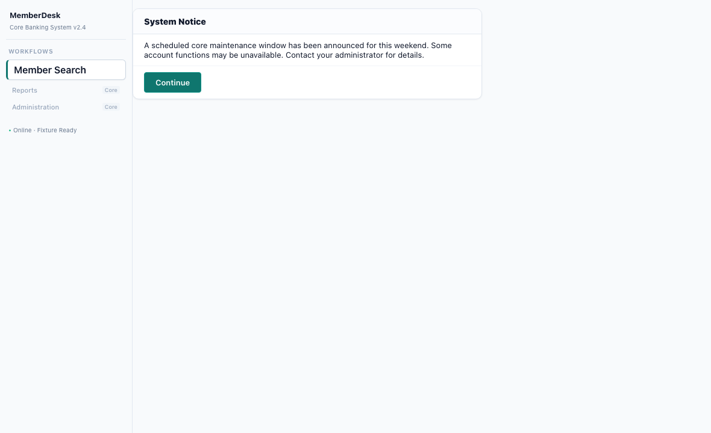
A system that assumed the click probably worked would type a member number into nothing and carry on. This one stops.
Two surviving candidates is TARGET_AMBIGUOUS and the resolver refuses; zero is a failed precondition. Both fail closed.
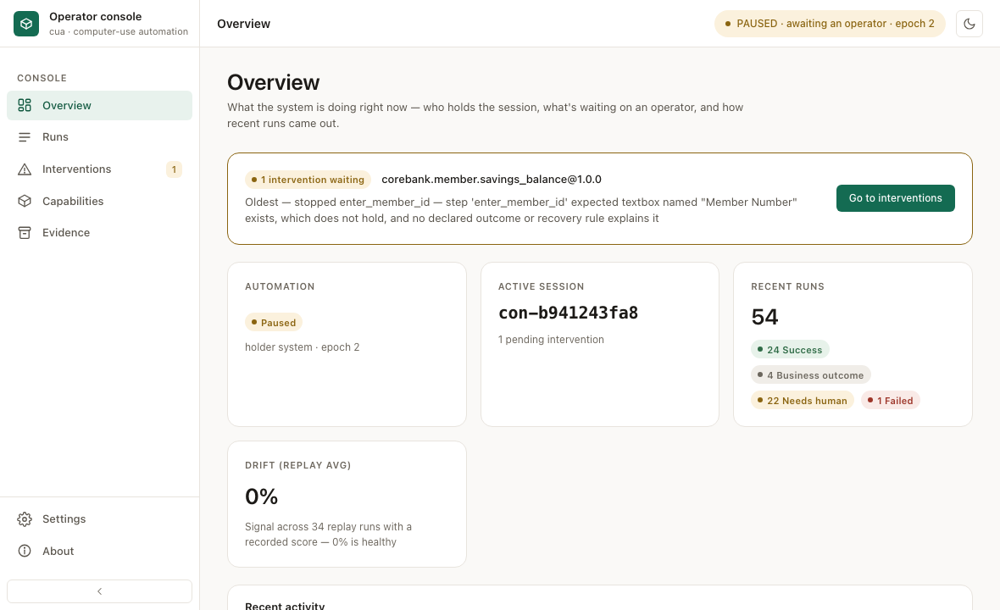
The stop is surfaced, not buried. Nobody has to notice a failed job or read a log to find out that a run needs a person.
Drift is on this screen for the same reason: it is the number that moves before anything breaks, so it belongs where someone will see it early.
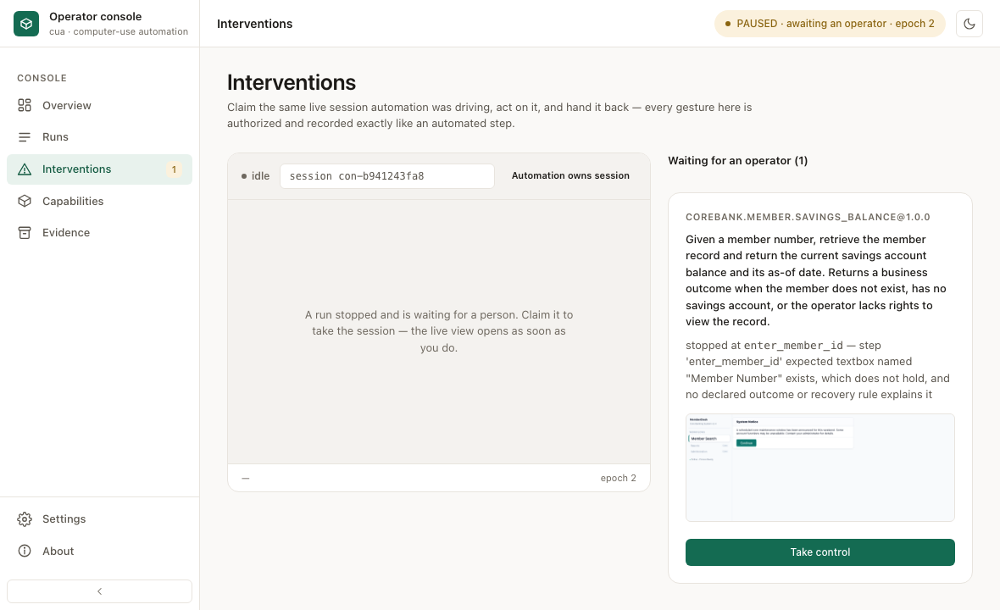
The failure is legible without reading a log: which capability, which step, what was expected, and a picture of what was actually there.
Nothing has been handed over yet. The lease still belongs to automation, and the live view stays closed until a person claims it.
The requirement most submissions describe rather than build. The operator drives the same live browser session the automation was driving.
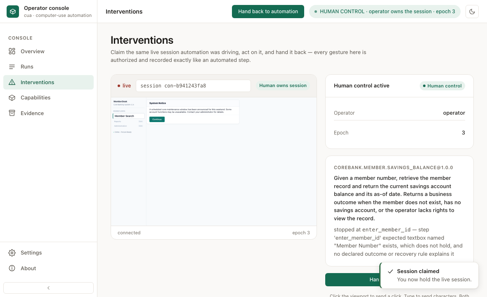
This is a transfer of a lease, not a screenshot viewer. Clicks and keystrokes in that viewport reach the same Chromium session the executor was using, and they travel the same policy chokepoint — authorized, classified and recorded with actor=HUMAN.
The epoch is what makes the handoff safe. Automation may only act while it holds the current epoch, so a late in-flight action from before the handoff cannot land on a session a person is now driving.
3 authorize actor=automation epoch=1 safe (default)
14 escalate actor=system epoch=2 needs_human
16 lease actor=human epoch=3 demo-operator
18 authorize actor=human epoch=3 elevated (action:raw_input)
19 dispatch actor=human epoch=3
28 lease actor=human epoch=4 released
29 lease actor=automation epoch=5 resumedA human action that bypassed policy or evidence would leave a hole in the audit trail exactly where the interesting thing happened. There is no separate path for people.
On release the executor re-anchors against the current screen and resumes at the right step — not from step 1, and not by assuming the page is where it left it.
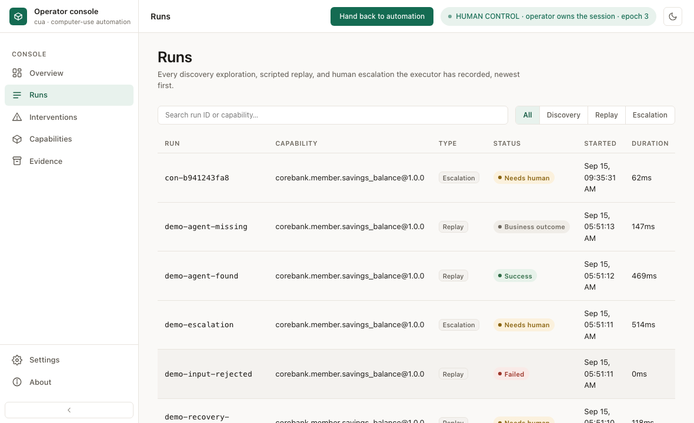
Each run writes an append-only, redacted, actor-tagged evidence directory. Secrets and PII are redacted at every sink — logs, artifacts, screenshots and model prompts alike.
The artifact is the tool contract. There is no second definition to drift.
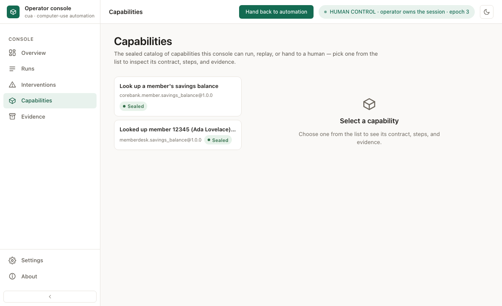
A tampered artifact shows as tampered rather than running: the state is computed from the content, not stored as a field somebody could set.
The agent's view of the catalog
tool corebank_member_savings_balance
purpose Given a member number, retrieve the member record and return the current savings account balance and its as-of date. Returns a business outcome when the member does not exist, has no savings account, or the operator lacks rights to view the record.
arguments ['member_id']
returns ['account_status', 'as_of', 'savings_balance']
outcomes ['member_not_found', 'no_savings_account', 'permission_denied']
(all of that came from the artifact -- there is no second tool definition)
invoke({'member_id': '12345'})
-> success [answered]
Here is the balance.
{'savings_balance': '4210.55', 'account_status': 'Active', 'as_of': '09/11/2026'}
The calling agent is told in advance which negative answers are legitimate, so it can distinguish 'no such member' from 'the automation broke' without parsing prose.
Because the schema is generated from the artifact, a change to the capability changes the tool contract in the same commit. There is nowhere for the two to disagree.
An LLM worked out how to operate a legacy application once, and that run became a typed, versioned, sealed artifact. The artifact replays deterministically against inputs the discovery never saw, distinguishes a negative answer from a fault, bounds its own recovery, fails closed on anything it does not recognise, hands the live session to a person and takes it back, and presents itself to an agent as a function with a declared signature.